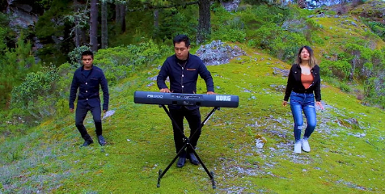
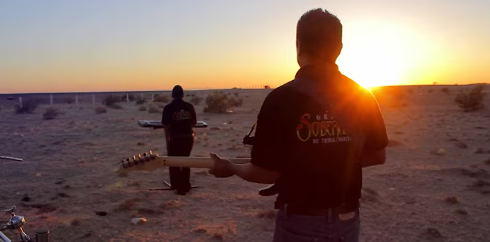
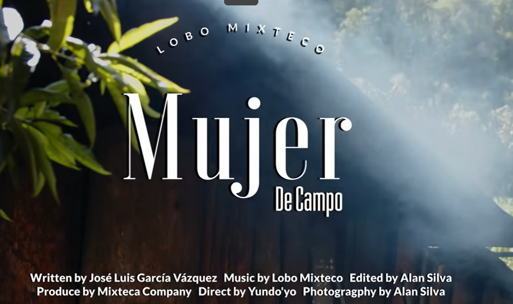

BACHILLERATO INTEGRAL COMUNITARIO DE SAN AGUSTÍN TLACOTEPEC


CHILENA MIXTECAORGANO

VIKO ÑUU YUKUNAMA

BURRO LOCO

LEJOS DE MI TIERRA

BAJO LAS ESTRELLAS
NUESTRAS LEGUAS

POR TUS CAPRICHOS

MUJER DE CAMPO

QUIEREME NIÑA

Canción 10
Canción 10
Canción 10
Canción 10
Canción 10